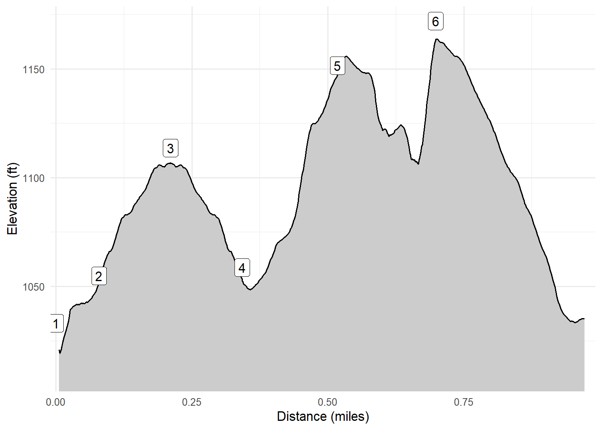

Dutton’s Cave County Park
User-Defined Lower Loop
Cash and I visited Dutton’s Cave County Park near West Union on November 28, 2024. The park has two areas, an upper part that has a small primitive campground and a lower part that is primarily a picnic area with a playground. From the parking area on the lower part we walked a well-defined trail to the base of the cave. The cave is closed to humans to protect the bats from white-nose syndrome. From there we back-tracked to the picnic area and then walked up a ravine on what looked to be a maintained trail. However, the trail soon disappeared so we followed deer trails across the ravine and along the base of a number of limestone outcrops before emerging on the road that returned to the picnic area parking lot. [Here is some history about Dutton.]
Walk-Specific Map
Take Note
- Click on a segment to get specific information.
- Numeric labels correspond to the same labels in the elevation profile and summary information below.
Elevation Profile

Images

DTNCL02: Cave from observation point

DTNCL04: Cash with ravine behind him

DTNCL04: Ice on pool in ravine
GPX Download
A sanitized GPX file of our hike is here.
Summary Information
| NUM | trackID | Primary | Description | Type | Owner | Distance | CumDist | DeltaElev |
|---|---|---|---|---|---|---|---|---|
| 1 | DTNCL01 | Dutton's Cave CP (Lower) | Parking area to Trail to cave | Trail | Public | 0.08 | 0.08 | 22 |
| 2 | DTNCL02 | Dutton's Cave CP (Lower) | to Cave | Trail | Public | 0.13 | 0.21 | 59 |
| 3 | DTNCL02 | Dutton's Cave CP (Lower) | Cave to | Trail | Public | 0.13 | 0.34 | -59 |
| 4 | DTNCL03 | Dutton's Cave CP (Lower) | Trail to cave to Deer trail begins | Trail | Public | 0.18 | 0.52 | 93 |
| 5 | DTNCL04 | Dutton's Cave CP (Lower) | Deer trail begins to Road | Trail | Public | 0.18 | 0.70 | 20 |
| 6 | DTNCL05 | Dutton's Cave CP (Lower) | Deer trail ends to Parking area | Trail | Public | 0.28 | 0.98 | -133 |